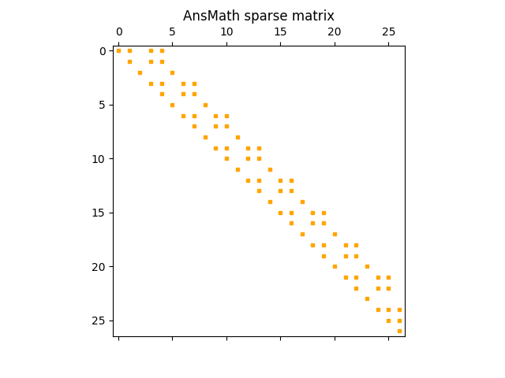

Note
Go to the end to download the full example code
Perform sparse factorization and solve operations#
Using PyAnsys Math, you can solve linear systems of equations based on sparse or dense matrices.
# Perform required imports and start PyAnsys
# ~~~~~~~~~~~~~~~~~~~~~~~~~~~~~~~~~~~~~~~~~~
# Perform required imports.
from ansys.mapdl.core.examples import vmfiles
import matplotlib.pyplot as plt
import ansys.math.core.math as pymath
# Start PyAnsys Math as a server.
mm = pymath.AnsMath()
Factorize and solve sparse linear systems#
Run a MAPDL solve to create a Full file. This code uses a model from the official verification manual.
After a solve command, the FULL file contains the assembled stiffness
matrix, mass matrix, and load vector.
List files in current directory#
List the files in current directory.
mm._mapdl.list_files()
['SCRATCH', 'TABLE_1', '__tmp_sys_out_abgpiltqiu__', 'anaconda-post.log', 'anstmp', 'ansys_inc', 'bin', 'dev', 'etc', 'file.DSP', 'file.emat', 'file.err', 'file.esav', 'file.full', 'file.ldhi', 'file.log', 'file.mlv', 'file.mntr', 'file.mode', 'file.page', 'file.r001', 'file.rdb', 'file.rst', 'file.rstp', 'file.stat', 'file000.jpg', 'file001.jpg', 'file002.jpg', 'file003.jpg', 'file004.jpg', 'home', 'lib', 'lib64', 'media', 'mnt', 'opt', 'proc', 'root', 'run', 'sbin', 'srv', 'sys', 'tmp', 'usr', 'var', 'vm152.vrt', 'vm153.vrt']
Extract stiffness matrix#
Extract the stiffness matrix from the FULL file in a sparse
matrix format. For help on the stiff function, use the
help(mm.stiff) command.
Print dimensions of sparse matrix#
Print the dimensions of the sparse matrix.
AnsMath sparse matrix (27, 27)
Copy AnsMath sparse matrix to SciPy CSR matrix and plot#
Copy the AnsMath sparse matrix to a SciPy CSR matrix. Then, plot the graph of the sparse matrix.

Get a copy of sparse matrix as a NumPy array#
Get a copy of the k sparse matrix as a NumPy array
<27x27 sparse matrix of type '<class 'numpy.float64'>'
with 77 stored elements in Compressed Sparse Row format>
Extract load vector from FULL file and print norm#
Extract the load vector from the FULL file and print the norm of this vector.
b = mm.rhs(fname=fullfile, name="B")
b.norm()
0.12181823800246586
Get a copy of load vector as a NumPy array#
Get a copy of the load vector as a NumPy array.
by = b.asarray()
Factorize stiffness matrix#
Factorize the stiffness matrix using PyAnsys Math.
s = mm.factorize(k)
Solve linear system#
Solve the linear system.
x = s.solve(b)
Print norm** of solution vector#
Print the norm of the solution vector.
x.norm()
7.774533362578086e-06
Check accuracy of solution#
Check the accuracy of the solution by verifying that \(KX - B = 0\).
kx = k.dot(x)
kx -= b
print("Residual error:", kx.norm() / b.norm())
Residual error: 5.251548690945302e-16
Get a summary of allocated objects#
Get a summary of all allocated AnsMath objects.
mm.status()
APDLMATH PARAMETER STATUS- ( 5 PARAMETERS DEFINED)
Name Type Mem. (MB) Dims Workspace
K SMAT 0.001 [27:27] 1
B VEC 0.000 27 1
GRZBWU VEC 0.000 27 1
HQDHLV VEC 0.000 27 1
GPVMBQ LSENGINE -- -- 1
Delete all AnsMath objects#
Delete all AnsMath objects.
mm.free()
Stop PyAnsys Math#
Stop PyAnsys Math.
mm._mapdl.exit()
Total running time of the script: ( 0 minutes 0.517 seconds)